Guide de prise en main
Un guide simple pour se connecter, suivre les modules, comprendre sa progression et utiliser son Kit CyberA.
Aux apprenants CyberA Fellows, à leurs accompagnateurs et aux responsables qui les aident à progresser dans le parcours.
LEARNACTLEAD01 · Accéder à l’application
Utilise les identifiants transmis lors de ton inscription. Pour le moment, la connexion se fait uniquement par email et mot de passe.
Va sur cyberambassador.sykoticenter.org avec Chrome, Firefox, Edge ou Safari.
Sélectionne Français ou English. Tu pourras continuer ton parcours dans la langue choisie.
Entre ton adresse email et ton mot de passe, puis clique sur Connexion. Ne partage jamais ton mot de passe.
Utilise « Inscrire un élève » ou le lien destiné au parent si ton compte n’a pas encore été créé.
En cas d’erreur : vérifie les espaces dans l’email, les majuscules du mot de passe et ta connexion Internet. Si le problème continue, demande une réinitialisation à ton responsable CyberA.
02 · Le tableau de bord
Après la connexion, l’accueil résume ce que tu dois faire. Le Coach Cyber propose une mission du jour, la grande carte indique le prochain module, et la zone de progression affiche ton avancement global.
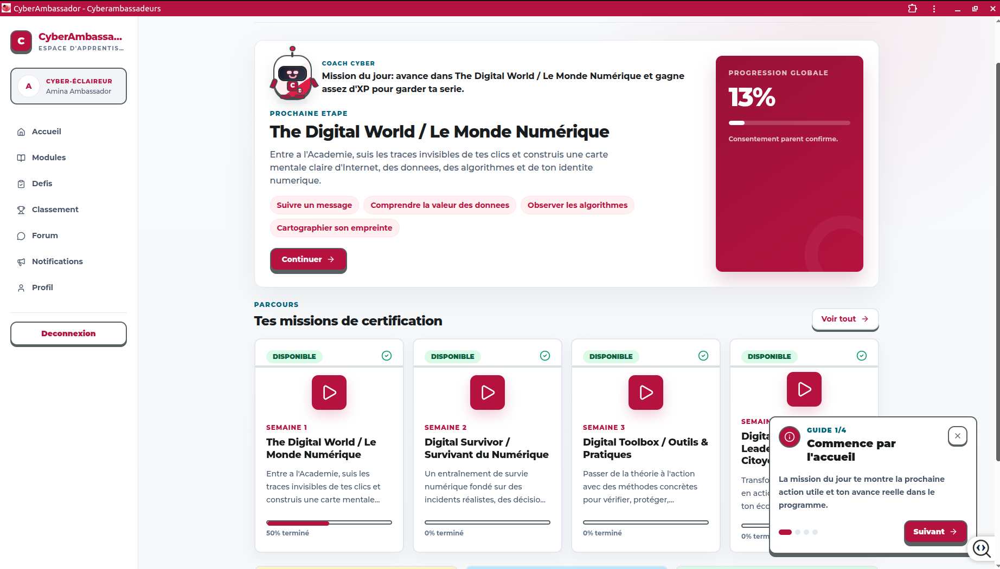
Le tableau de bord rassemble la prochaine étape, les quatre modules et la progression.
Reprend exactement le prochain contenu utile sans chercher où tu t’étais arrêté.
Montre la part du parcours déjà validée. Les leçons terminées alimentent ce chiffre.
Compte les jours d’apprentissage réguliers. Une courte séance régulière vaut mieux qu’un long abandon.
Récompense les leçons, quiz et défis réussis. Ils montrent tes efforts, pas seulement ton score final.
03 · Naviguer
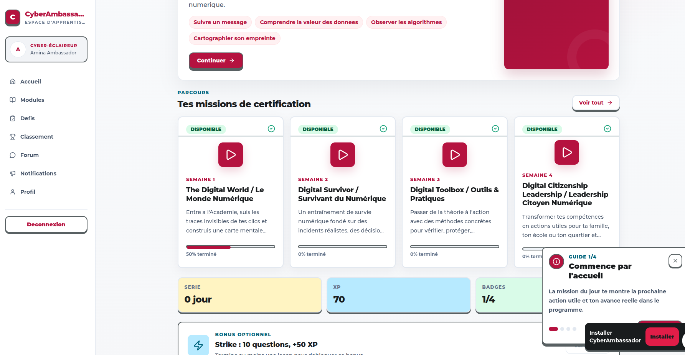
Le menu reste à gauche sur ordinateur. Le guide intégré apparaît en bas à droite lors de la découverte.
Retourne à la mission du jour et à la vue d’ensemble.
Retrouve ton identité CyberA Fellow, les étapes du parcours et les raccourcis importants.
Affiche les parcours d’apprentissage et les leçons disponibles.
Met en pratique les compétences avec des activités concrètes.
Présente la progression collective et encourage l’effort positif.
Permettent d’échanger, de demander de l’aide et de voir les nouveautés.
Astuce : le petit guide en bas à droite explique l’interface en quatre étapes. Clique sur « Suivant » ou ferme-le avec × quand tu as compris.
04 · Apprendre
Le parcours contient quatre missions complémentaires. Termine le module en cours pour déverrouiller le suivant.
Comprendre ce qui se passe derrière l’écran : données, messages, plateformes, algorithmes et identité numérique.
Reconnaître les menaces, les manipulations et les signes d’une attaque avant de devenir une victime.
Acquérir des méthodes concrètes pour vérifier, protéger, sauvegarder et agir avec confiance.
Transformer ses connaissances en actions utiles pour sa famille, son école et sa communauté.
Observe la scène, lis l’explication, réponds à la question et découvre ce que la technologie fait en coulisses.
Explique le mécanisme avec tes propres mots. Si tu hésites, relis la preuve et l’explication avant de continuer.
Important : ne clique pas au hasard pour aller vite. Les temps d’observation et les questions servent à construire une compréhension durable.
05 · Ton Kit CyberA
Le Kit CyberA est ton point de repère personnel. Il relie ta formation à ton évolution de CyberA Fellow vers CyberAmbassador.
Elle affiche ton nom, ta cohorte et ton identité CyberA Fellow. Ce n’est pas encore un certificat officiel.
Onboarding, Learn, Practice, Challenges, Community Action, CyberComp Final et Graduation.
Accède directement aux modules et aux leçons.
Retrouve les activités pratiques et les preuves à soumettre.
Consulte le nombre de leçons terminées et ce qu’il reste à accomplir.
Repère les rendez-vous, Weekly Reviews et moyens d’obtenir de l’assistance.
La bonne routine
Commence par la mission du jour, termine une leçon avec attention, applique ce que tu as appris dans un défi, puis consulte ton Kit pour voir le chemin parcouru.
06 · Le Kit en images
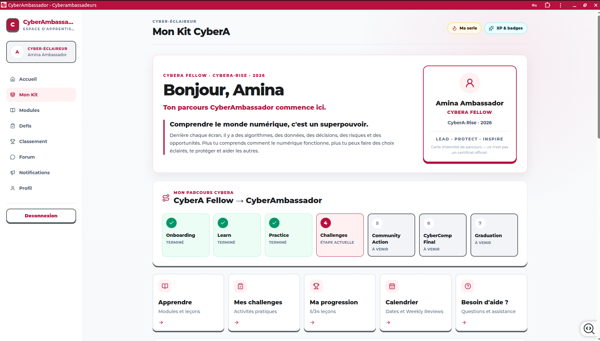
Le haut du Kit présente ton identité CyberA Fellow et les sept étapes vers la graduation.
La carte rose indique où tu te trouves. Les étapes vertes sont terminées et les grises restent à venir.
Les cartes Apprendre, Challenges, Progression, Calendrier et Aide ouvrent directement les outils utiles.
07 · Calendrier et engagement
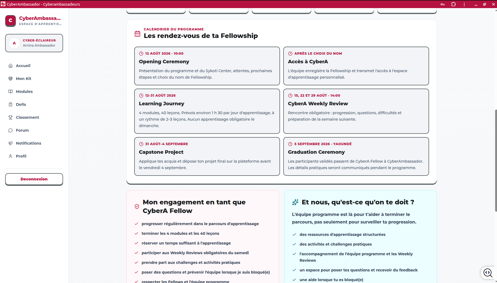
Le calendrier regroupe la Learning Journey, les Weekly Reviews, le Capstone et la graduation.
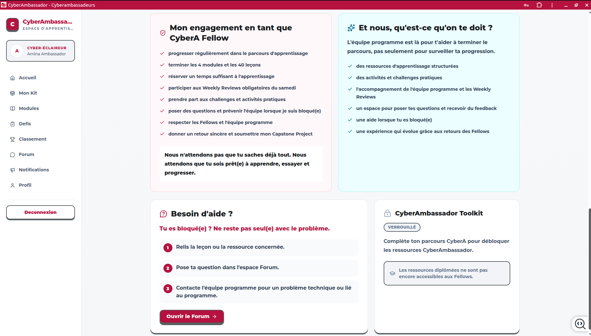
Le Fellow et l’équipe programme ont chacun des engagements clairs.
À retenir : note les dates importantes, participe aux Weekly Reviews, pose des questions tôt et préviens l’équipe lorsque tu es bloqué.
08 · Catalogue des modules
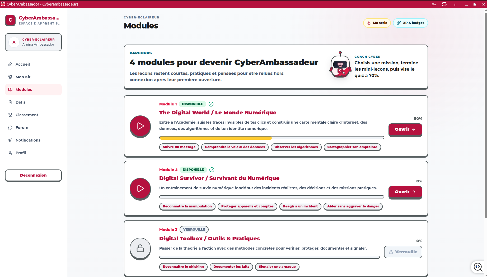
Chaque carte indique le statut, la progression, les compétences et le bouton d’ouverture.
Tu peux ouvrir le module et poursuivre ses leçons.
Termine d’abord le module précédent et son évaluation.
La barre colorée représente le pourcentage terminé. Clique sur Ouvrir pour retrouver les leçons du module.
09 · Détail d’un module
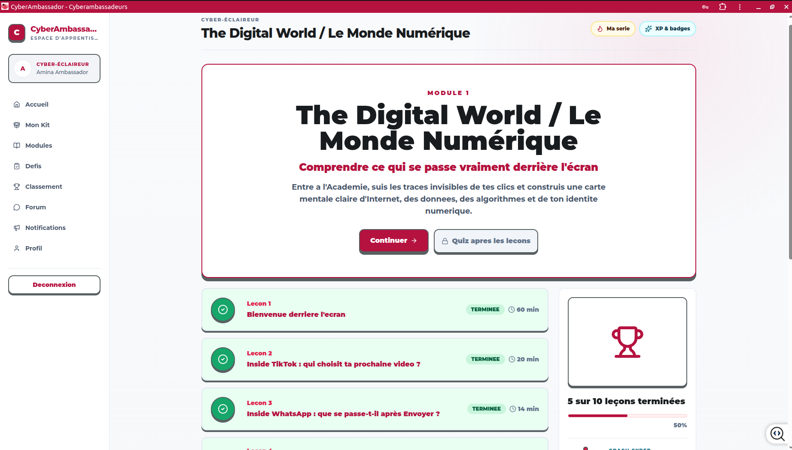
Les leçons terminées apparaissent en vert; le panneau latéral résume l’avancement.
Ouvre la première leçon encore incomplète.
Se déverrouille lorsque les conditions du module sont remplies. Vise au moins 70 %.
10 · Défis pratiques
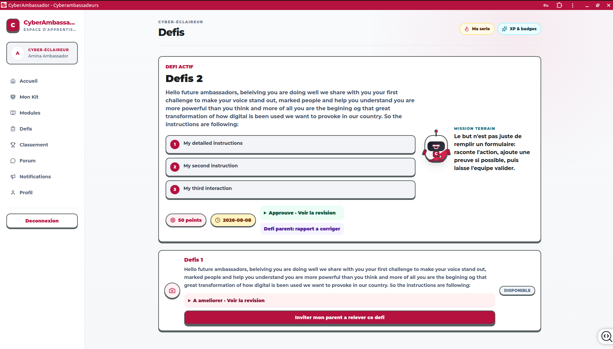
Un défi présente l’objectif, les instructions, les points et les retours de validation.
Identifie le résultat attendu et les preuves demandées.
Documente ce que tu fais sans exposer de données personnelles.
Si le défi est à améliorer, lis le retour puis renvoie une meilleure version.
11 · Progression collective et signalements
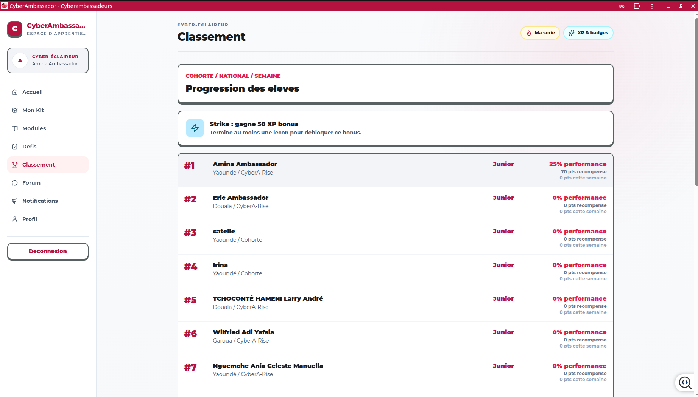
Le classement compare l’activité et la performance; il sert à encourager une progression positive.
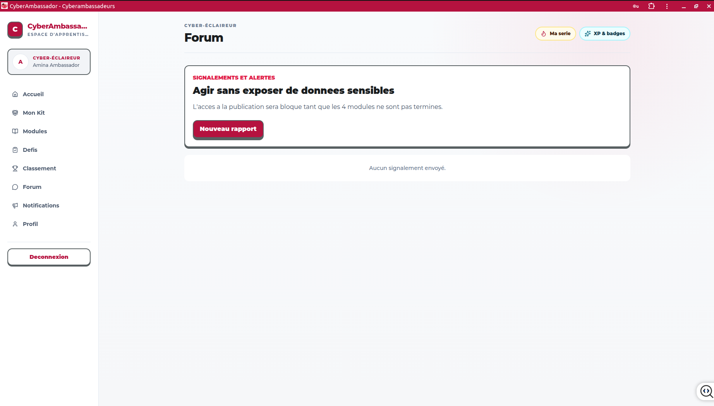
Le Forum permet de demander de l’aide et, une fois autorisé, de créer des signalements responsables.
Protection : ne publie jamais de mot de passe, numéro privé, document d’identité ou capture contenant des données sensibles.
12 · Messages et identité
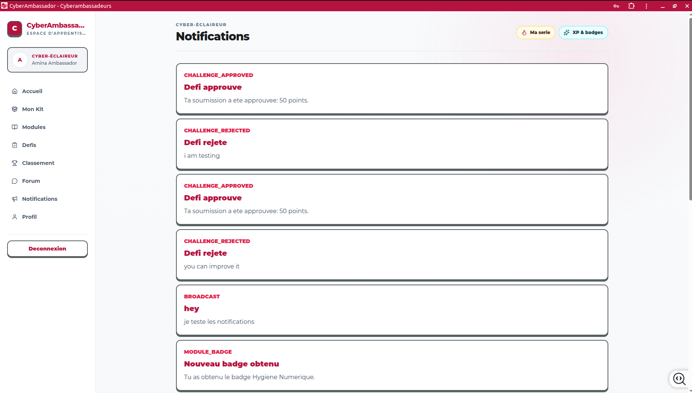
Les notifications annoncent les validations, corrections, badges et messages de l’équipe.
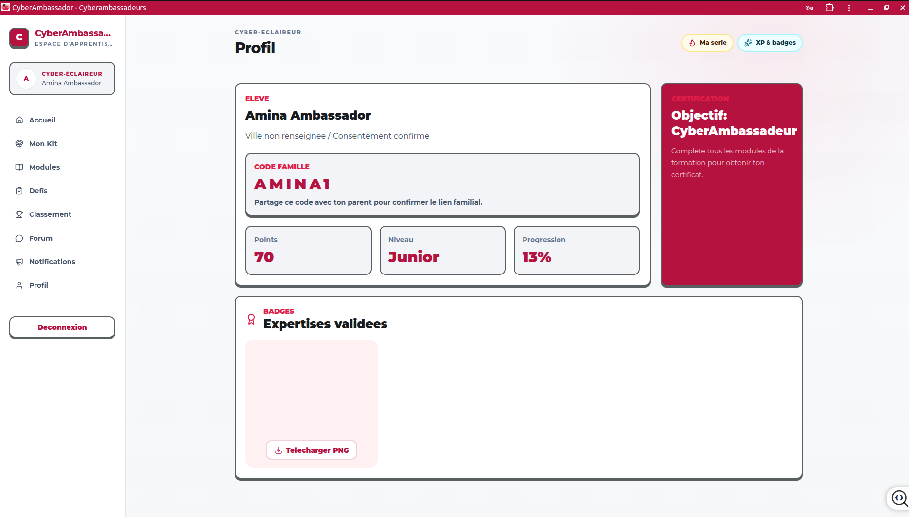
Le Profil regroupe le code famille, les points, le niveau, la progression et les badges.
Code famille : partage-le uniquement avec ton parent ou responsable afin de créer le lien familial prévu par l’application.
13 · Mon statut
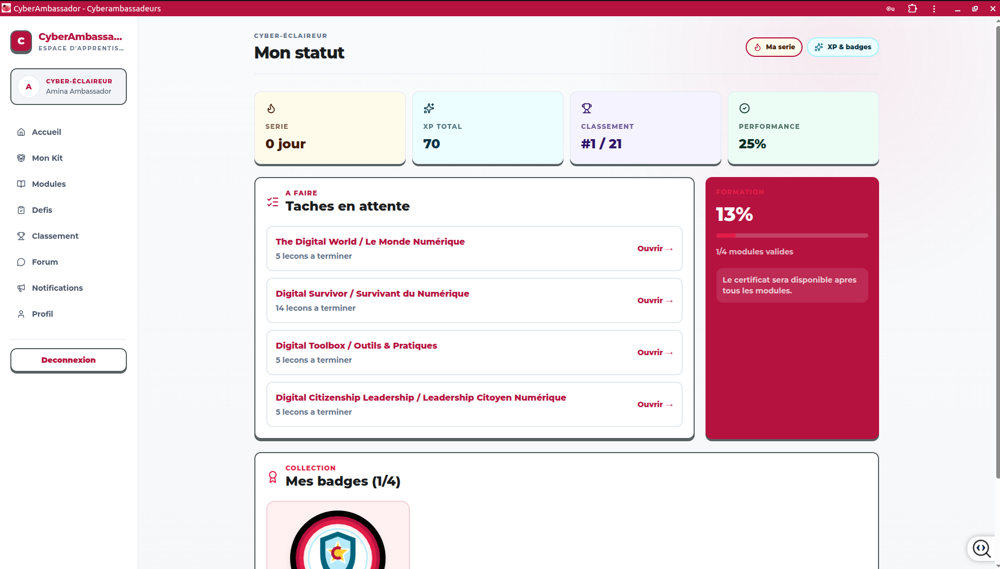
La page Mon statut rassemble la série, les XP, le classement, la performance, les modules et les badges.
Ouvre directement les modules dans lesquels il reste des leçons.
Montre le pourcentage global et le nombre de modules validés avant le certificat.
14 · Assistance
Vérifie l’adresse, ta connexion Internet, puis recharge la page. Essaie une fenêtre privée si le navigateur garde une ancienne erreur.
Retape l’email et le mot de passe. Vérifie les majuscules et demande de l’aide après plusieurs essais.
Retourne au module précédent et vérifie que toutes ses leçons et son quiz final sont terminés.
Utilise le bouton audio visible dans l’espace de leçon pour couper ou réactiver l’ambiance sonore.
Actualise la page après quelques secondes. Si elle ne change pas, note la leçon concernée et contacte ton responsable.
Règle de sécurité
Une personne qui t’aide peut demander une capture d’écran du problème, mais elle ne doit pas te demander ton mot de passe. Déconnecte-toi toujours sur un appareil partagé.
Besoin d’aide ? Prépare ton nom, la page concernée, une courte description et une capture d’écran sans information sensible.